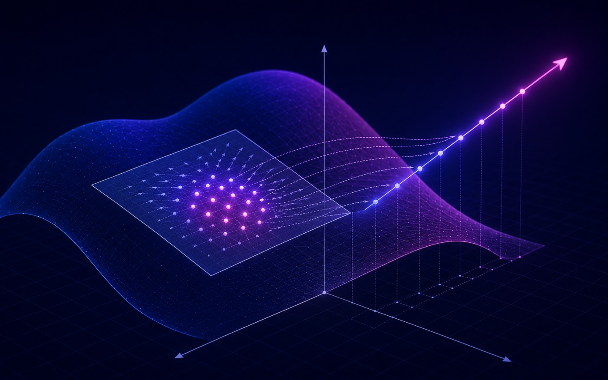

Paraphrase Geometry for Embedding Enhancement
An ongoing training-free, model-agnostic method that refines sentence embeddings at inference time using paraphrase geometry.
Meaning beyond word overlap
Research explainer
Authored walk-through of the documented pipeline. It shows how the system works, not recorded results.
The idea
Sentence embeddings power semantic search, retrieval-augmented generation and clustering — but even strong encoders often confuse surface-form overlap with true meaning. This ongoing project treats a sentence's paraphrases as samples of a local, meaning-preserving manifold, and uses the geometry those paraphrases trace out to refine the embedding.
Why it matters
It all happens at inference time — no labels, no extra training, and compatible with any frozen encoder — aiming for the kind of gains contrastive fine-tuning gives, but without the training cost or the loss of generality, which matters in privacy-, latency- or IP-constrained deployments. (Method details are held back while the work is under submission.)
Tech stack & key skills
Core tools, methods and skills demonstrated in this project: